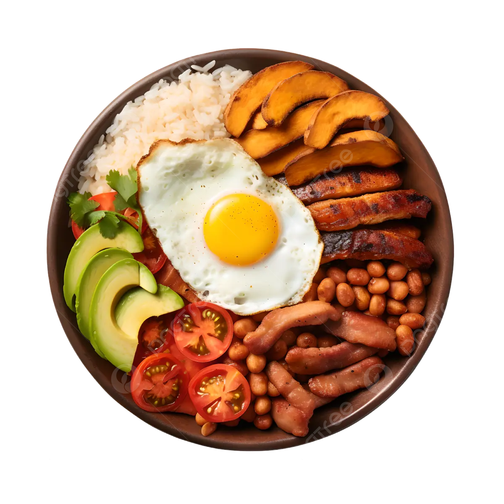
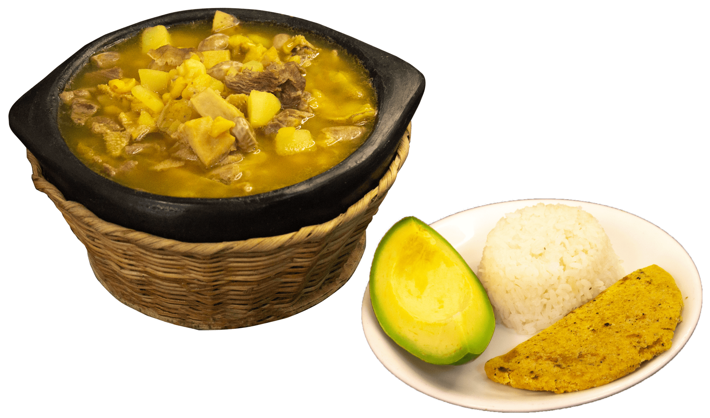

Acerca de nosotros
Somos el equipo apasionado detrás de 'Colombianos en la Cocina'. Nuestra página web es un tributo a la riqueza culinaria de Colombia. Juntamos recetas auténticas transmitidas de generación en generación, explorando los sabores y secretos detrás de los platos icónicos de nuestra nación. Nuestra misión es compartir la cultura y el amor por la comida colombiana, invitándote a unirte a nosotros en este emocionante viaje gastronómico. ¡Descubre, cocina y disfruta con nosotros!

Bandeja Paisa
 Click para ir a la recetaLa Bandeja Paisa, un plato emblemático de Colombia, es un festín de sabores y texturas. Combina carne, arroz, frijoles, huevo frito, chicharrón, aguacate y plátano maduro en una experiencia culinaria inolvidable.
Mute Santandereano
 Click para ir a la recetaEl Mute Santandereano es un plato icónico de la región de Santander en Colombia. Esta sopa espesa combina frijoles, carne de cerdo, yuca, plátano y maíz para crear una explosión de sabores y texturas únicas.